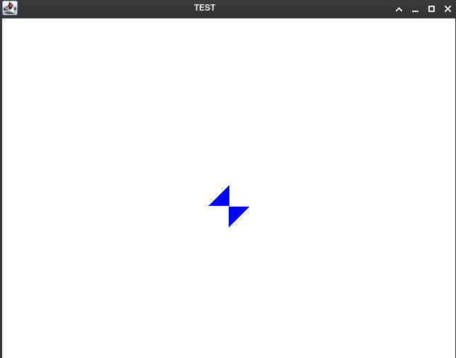

BACK
8th of May 2022
I started the project by creating point, triangle and rigidbody classes.
The rigidbody has a mesh made up of an array of traingles, and each triangle has an array of 3 points.(along with a few other things)
When a rigidbody is instntiated it's center of mass is calculated all points in it's mesh are translated so that the center of mass is at (0,0)
local space and a reference to the rigidbody is added to the renderer's list of objects to render.
I also wrote a simple function to take txt files and convert them into meshes with this format:
(0,0):(1,0):(1,1) (0,0):(0,1):(1,1)
10th of May 2022
I used my (limited) knowledge of linear algebra to write a function to rotate the meshes. However I had the issue where the object was shrunk to a microscopic size and squewed. Luckily with a second pair of eyes (thanks Jacob) I was able to locate my stupid typo 
13th of May 2022
The other issue I was having was that the program would only render 1 or 2 frames.
And would render them only after the rest of the program was finished. So I reached out
to xirado and Archduke Liamus on the Java Discord API discord server
and they gave me the advice to look into creating a buffer with a system built into the
system I was using to create the simulation window (AWT). When I looked into it I found
iiAtlas's code to buffer frames
That I then proceeded to steal and adapt to my own use. Now the software can animate movement
and rotation.